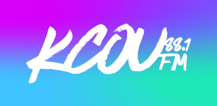
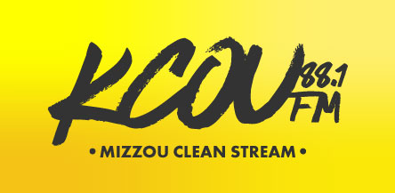
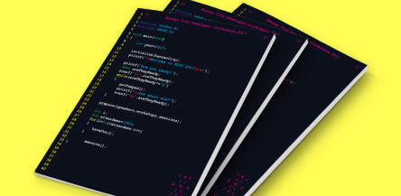
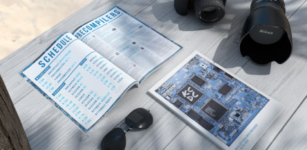

Software Work link My GitHub

KCOU 88.1FM Android Application
Official radio application for KCOU 88.1FM Columbia.
Created for our general users.
Lets our users listen to our stream, shows recents tracks that were played, UI adapts to current content.

KCOU @ Mizzou Student Center App
KCOU 88.1FM streaming application used inside the Mizzou student center
for playback over the loudspeakers. Guaruntees the stream is always playing clean music.
Includes a bot that notifies KCOU engineering staff when the online stream goes down.
remove
This site was also made completely from scratch by me!
No frameworks or premade elements, all custom.
The site is also hosted solely off my own little mini-server,
set up using a Raspberry Pi in my apartment.
remove

Kansas City Developer Conference '17
For the 2017 developer's conference I created the overall branding including staff and attendee shirts, conference banners, custom nametags,
and conference program that held speaker/session/administrative information.

Kansas City Developer Conference '16
For the 2016 developer's conference I again created the overall branding including staff and attendee shirts, conference banners, custom nametags,
and conference program that held speaker/session/administrative information.
remove